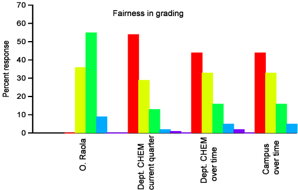

Here is the single item where I got no "excellent", only good and mostly satisfactory. In retrospective, I think this was mostly motivated by my idea of providing quizzes somewhat more challenging than most of the students were used to. At the beginning of the quarter, I heard their complaints and I was worried too. So I had the instructor of record for the lecture course go over the quizzes with me, just to make sure that I was not asking too much. She agreed that the quizzes were fine, and then it was my task to convince the student that was the case. I learned a good lesson: in case of conflict over evaluations, it is always better to consult with more experienced members of the faculty, just to make sure that we are not biased or out of touch with the students.